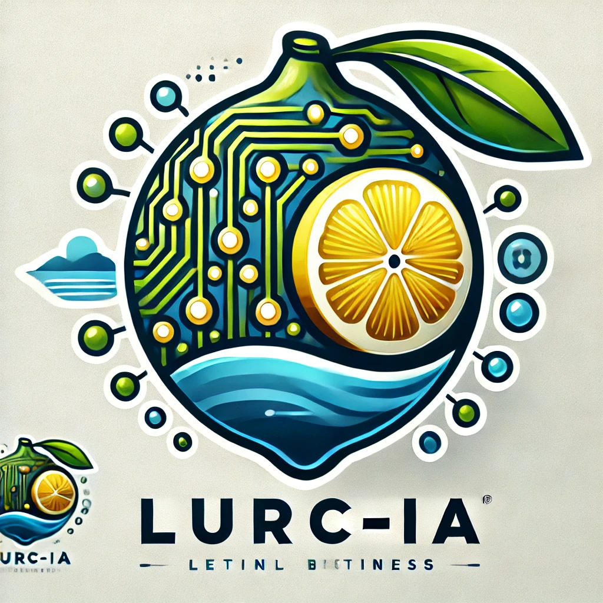
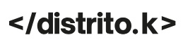
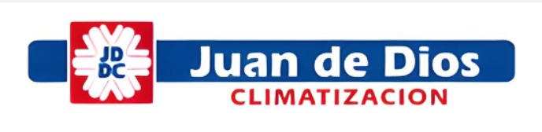

Software
para
empresas
Inicio
Recursos

Asistente
SQL
Conta & Obras
Haz tu pregunta. Ej: “¿Cómo se da de alta un producto?”
Esperando tu pregunta o contenido...
📷 Cámara
🎤 Grabar audio
⏹️ Detener audio
🎥 Grabar video
⏹️ Detener video
Enviar

Favoritos / Historial